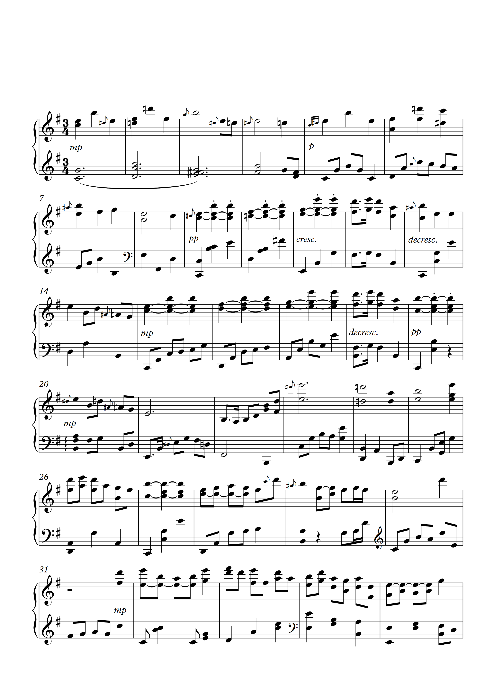
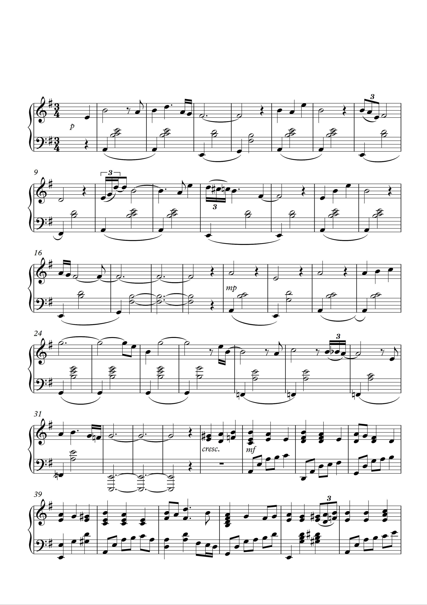
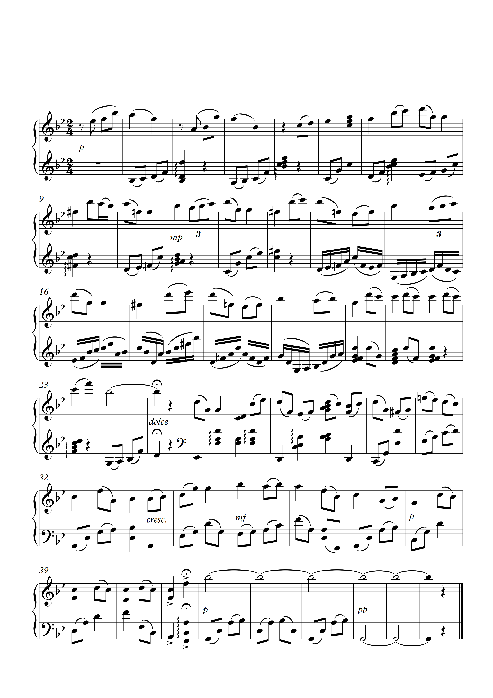
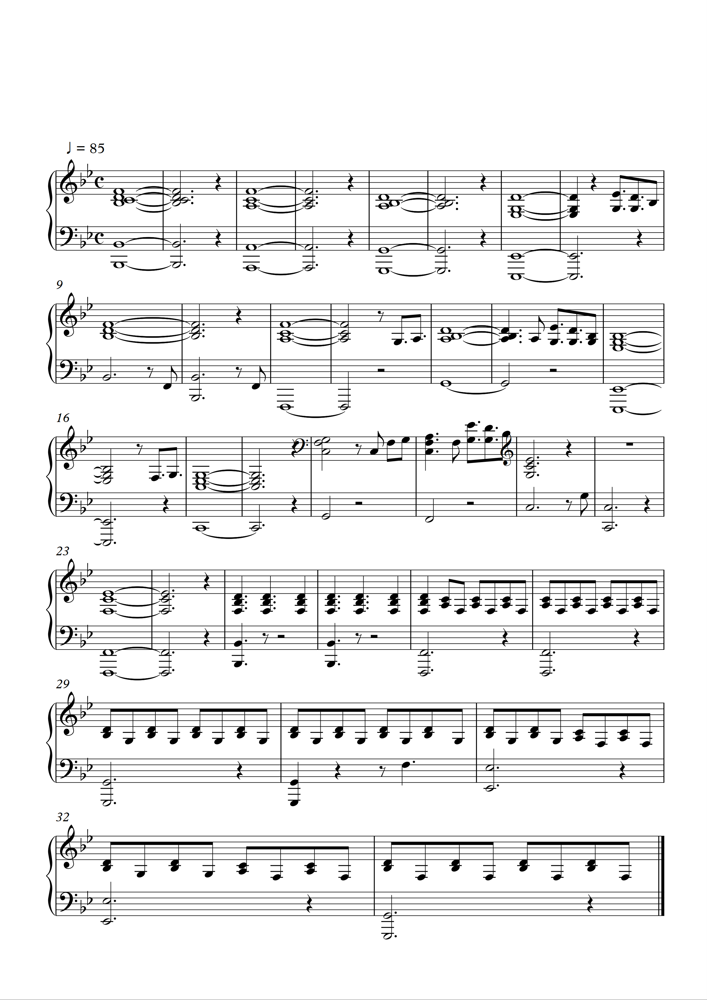
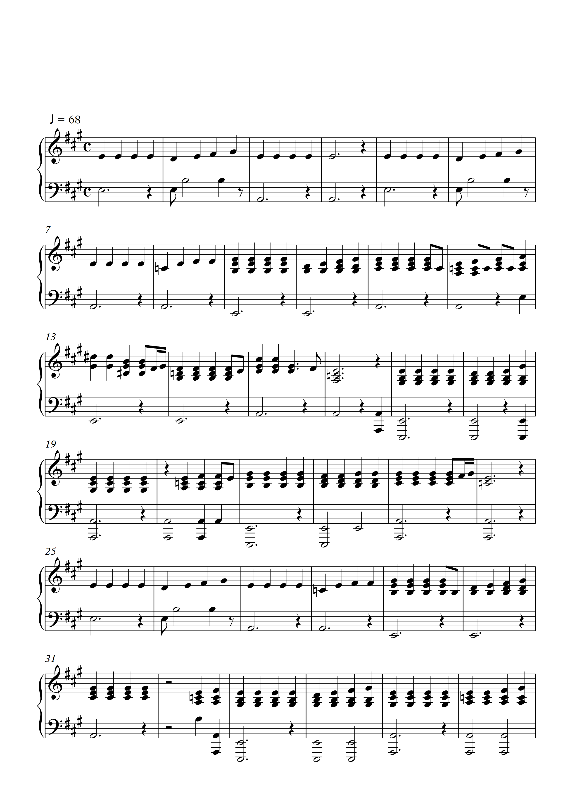

본 콘텐츠는 Chrome 브라우저에 최적화 되어있습니다.
본 콘텐츠의 리소스와 웹 코드는 모두 본인에 의해 제작되었음을 미리 밝힙니다.
어머니께서는 TV에서 흘러나오는 음악을 장난감 피아노로 따라 치는 우리 자매에게 음악을 가르치고 싶어 하셨습니다.
그 당시 경제적인 상황이 좋지 않았던 터라 어머니께서는, 값비싼 과외 대신 동네의 10평 남짓한 피아노 교습소를 택하셨지요. 그곳에서 저는 아주 많은 것을 배웠습니다.
떠오르는 대로 연주하는 것을 좋아하던 제가, 지금 악보를 보고 연주할 수 있는 까닭은 어머니의 음악에 대한 열의 때문이라 생각하며 존경해 마지않습니다.
음악을 듣고 느끼고 연주하는 것도 중요하지만, 음악을 보거나 쓰고 읽는 것 또한 굉장히 중요하다는 것을 느꼈기 때문이지요.
대학생이 되어 교내의 밴드 활동을 하게 되었을 때, 우리는 악보를 굉장히 소중히 여겼습니다.
유투브에만 있는 음악이나 스트리밍 서비스가 지원되지 않는 음악들은 밴드의 세션들이 연주하기 힘들어했기 때문이었지요.
그럴 때마다 저는 제 재능을 발휘해 수기로 악보를 그리거나 코드를 표기해 합주를 도왔습니다.
2년 간의 밴드 활동은 제게 같은 관심사를 가진 다른 사람들과 음악에 대한 이야기를 나눌 수 있는 소통의 장이 되었고,
스스로도 더 많이 성장할 수 있는 계기가 되었습니다.
저는 주로 즉흥적인 연주를 녹음한 뒤 악보로 옮겨 적는 작업을 하는 편이라, 이 페이지에는 제 연주를 채보한 악보와
개인적으로 필요로 하여 채보한 악보를 담았습니다.
수기로 작업한 악보들은 본가에 있고, 작업 파일도 지금 제가 가지고 있는 것들이 많이 없어,
몇 가지만 첨부하는 점 양해부탁드립니다.
* 'Sibelius 7'을 사용했습니다.
* 이미지나 타이틀을 누르면 전체 악보(pdf)를 보실 수 있습니다.
* 'Sibelius 7'으로 작업한 원본 파일은 'https://github.com/rlamj5555/lovemusic_port/tree/master/note'에서 확인하실 수 있습니다.
* 사운드 관련 다른 기록들은 우측 상단의 'Sound' 버튼을 통해 확인하실 수 있습니다.





untitled-1
untitled-2
untitled-3
짙은 - 달
양다일 - 우린 알아
어린 시절, 그리고 중, 고등학생 시절. 무언가를 연주하는 것은 제 취미었고, 일상이었습니다.
건반 위에 손을 올려 놓으면 생각나는 좋은 아이디어들을 놓치지 않기 위해 녹음하는 습관이 생겼습니다.
지금은 사정 상 부모님과 따로 거주하고 있어 피아노가 정말 그립지만, 녹음해두었던 파일들을 다시 들으며 회상하고는 합니다.
이 녹음 파일들을 들으면, 마치 어린 시절 일기를 다시 꺼내보는 느낌이랄까요?
저는 보통 앞 서 말씀드렸 듯이 새로운 아이디어를 연주하기도 하지만,
음악이 들리는 대로 연주하는 것 또한 좋아합니다.
다른 사람들에게 포트폴리오라는 것은 어쩌면 남들에게 보여주기에 부끄럽지 않은 것만 기록하는 것이겠지만,
저는 이러한 관심과 과정 또한 중요하다 생각하기에,
부끄럽지만 제 연습 파일들을 첨부하고자 합니다.